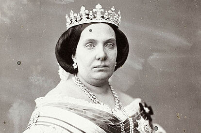

Cuentos de la Alhambra
¿Un inglés en Granada sin calcetines y chanclas? ¿Un inglés que vivió en la Alhambra? Descubre a Washington Irving y sus Cuentos de la Alhambra
El Alcázar de Toledo, palacio imperial sin emperador
A lo largo de la historia, el Alcázar ha vivido y visto momentos que han marcado la historia de España, como que fuera reformado como palacio en el siglo XVI para que luego no fuera residido por la familia real

Isabel II
¿Isabel II era la viva imagen de la fiesta y, por ello, hacía honor a su nombre familiar?
Historia de Sevilla
Esto es un musulmán, un judío y un cristiano que se encuentran en la puerta de un bar... ¿Cómo sigue el chiste?
Conoce Sevilla, una ciudad donde la diversidad cultural ha hablado por sí sola durante siglos.
Tiempo para leer este artículo: 5 minutos